Windows
桌面版适合经常用笔记本在宿舍 / 教室连校园网的同学：连上 LNPC-STU 后自动完成网页认证，还能开机静默自启、屏蔽系统弹浏览器。
- 0
下载并安装
回到官网首页「下载应用 → 获取 Windows 版」，下载
wlan-auto-connect-v1.1.0-setup.exe，双击安装（无需管理员权限）。安装完成后从开始菜单打开「校园网自动登录」。 - 1
阅读并同意用户协议
首次打开显示《用户协议与隐私声明》。向下滚动阅读到最后一页后，「同意并继续」按钮才会亮起，点击即可进入；不同意可点「退出应用」。
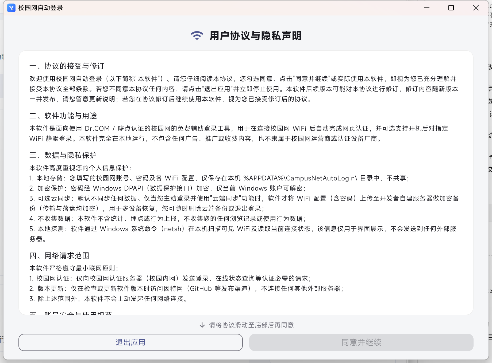
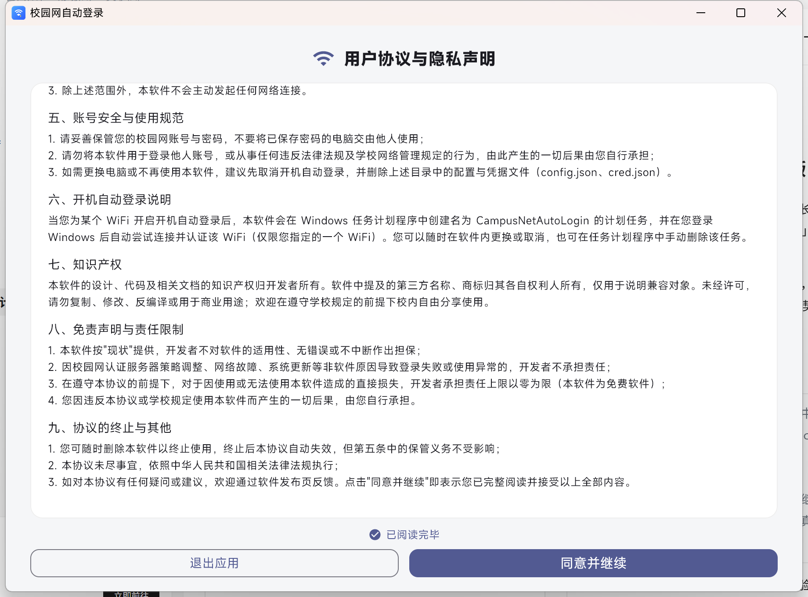
- 2
查看使用说明
进入前会弹出「使用说明」，介绍数据本地保存、一键连接、开机自启等要点，点「我知道了」进入主界面。
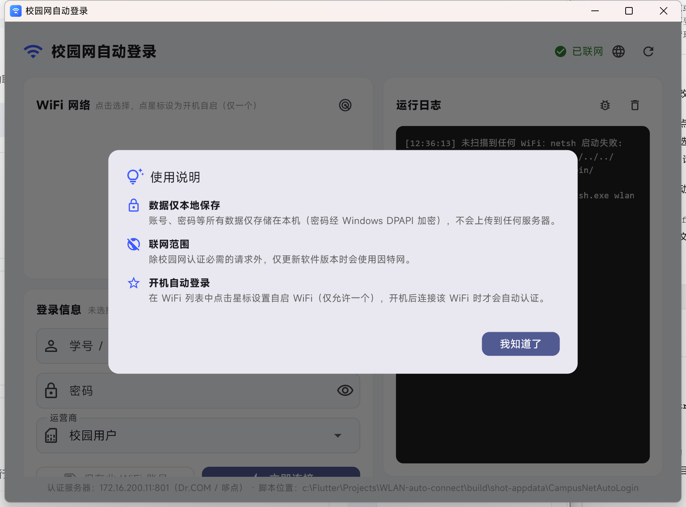
- 3
认识主界面
左侧是「WiFi 网络」与「登录信息」，右侧是「运行日志」；右上角显示当前联网状态（已联网 / 未联网），并提供语言切换与刷新按钮。
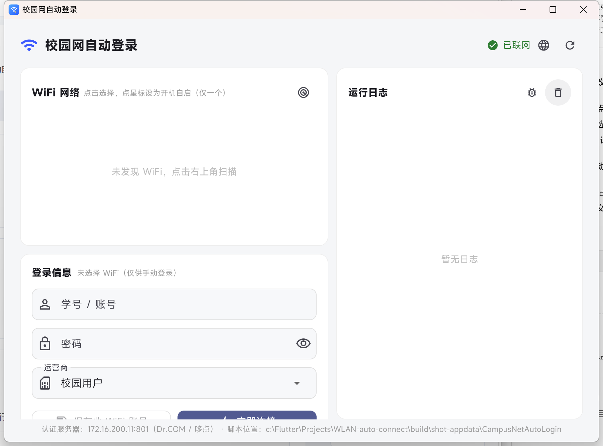
- 4
填写账号并完成一次认证
点「WiFi 网络」右上角扫描并选择本校 LNPC-STU（也可不选、直接手动登录）。在「登录信息」填写学号 / 账号、密码，选择运营商（校园用户 / 电信 / 联通 / 移动），点「保存此 WiFi 账号」，再点「立即连接」即可完成一次认证。
演示截图中的账号 20250001 为虚构示例，请填入你自己的真实学号与密码。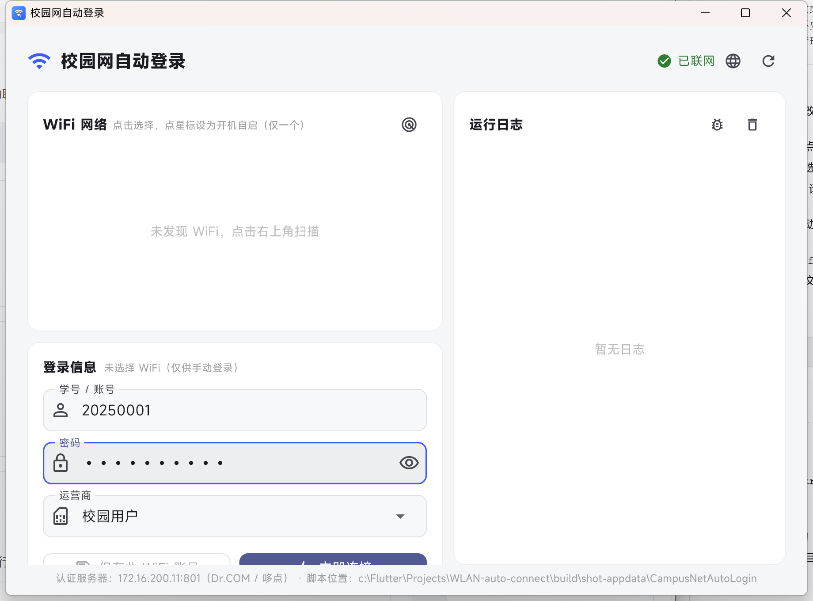
- 5
开启开机自动登录
在「开机自动登录」卡片点「保存并开启」，之后每次开机登录桌面即对星标 WiFi 静默认证，全程无窗口。可选开启「阻止自动弹出认证网页」，屏蔽 Windows 强制门户探测（需管理员确认）。
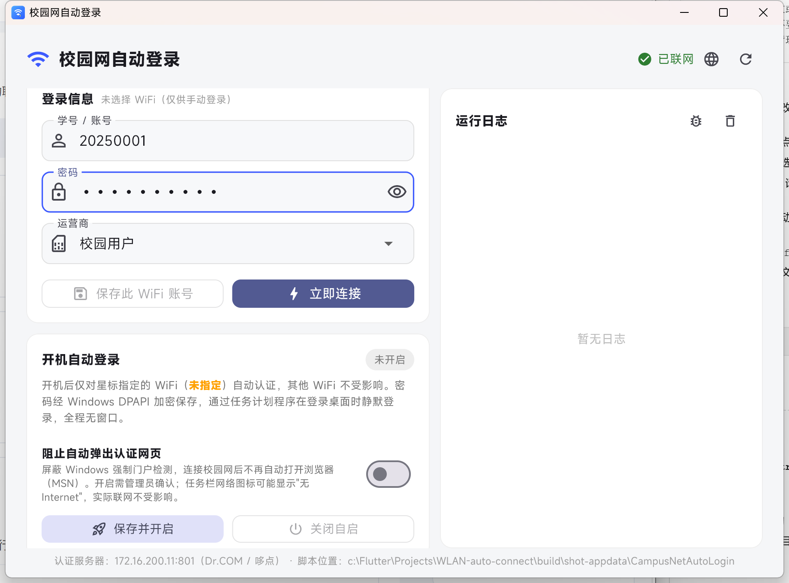
- 6
认证服务器与云端同步
默认认证服务器为
172.16.200.11:801（Dr.COM / 哆点），本校无需改动；其他学校点右侧铅笔图标修改。「云端同步」可用友爱账号跨设备备份 / 恢复 WiFi 配置。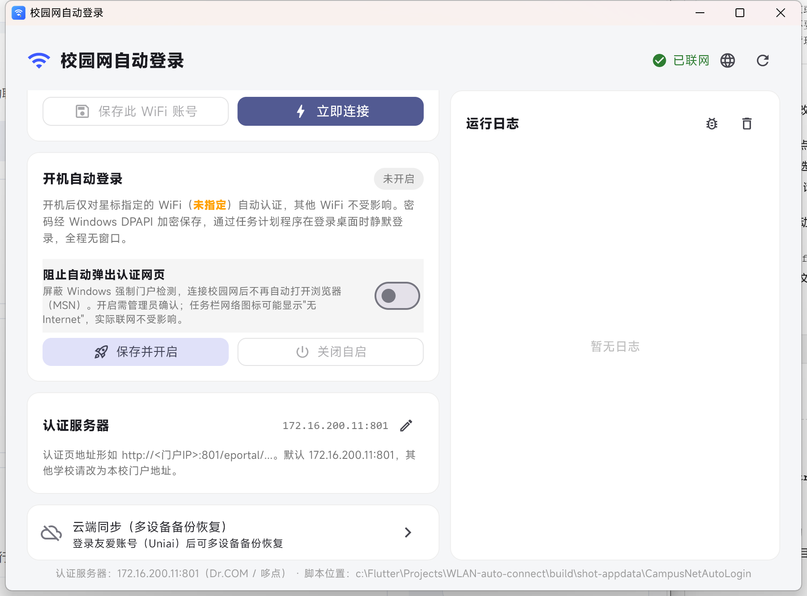
- 7
修改 / 自动探测认证服务器
点认证服务器的铅笔图标弹出编辑框，可手动填写门户地址与端口；连上校园网且尚未认证时，也可点「自动探测」自动识别门户地址。
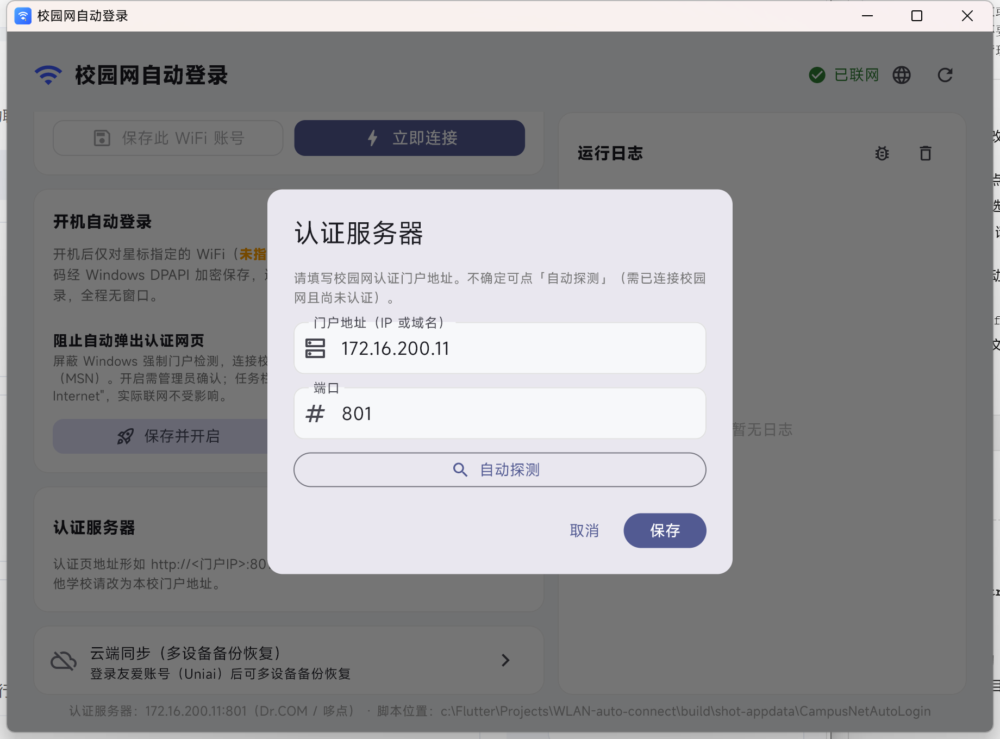
- 8
登录云端账号（可选）
进入「云端同步」页，用手机号注册 / 登录友爱账号（Uniai），一次注册多端登录。WiFi 档案加密上传，仅本人登录后可读取，可随时删除云端备份。
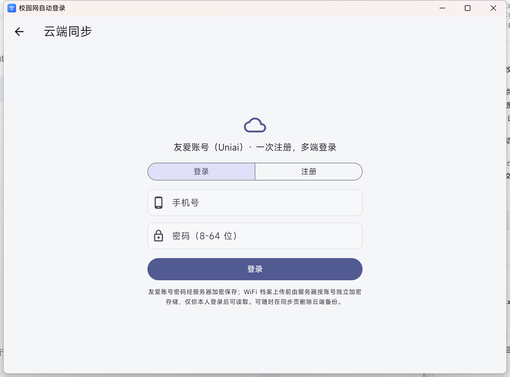
Android
安卓版支持桌面小组件与控制中心磁贴一键认证，还可关闭系统联网探测实现全程静默。以下截图来自 Android 14 模拟器真实运行界面。
- 0
下载并安装 APK
回到官网首页「下载应用 → 获取 Android 版」，选择对应架构（近几年的手机选 64 位 arm64-v8a），下载 APK 传到手机安装。若提示「未知来源 / 允许安装」，允许即可。
- 1
阅读并同意用户协议
首次打开显示《用户协议与隐私声明》，向下滚动到最后一页后「同意并继续」按钮亮起，点击继续。
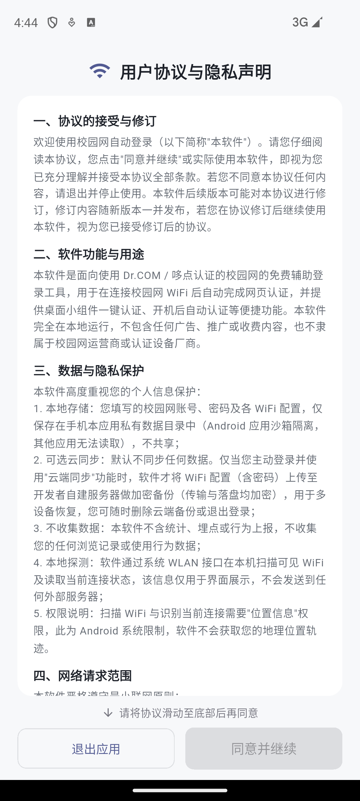
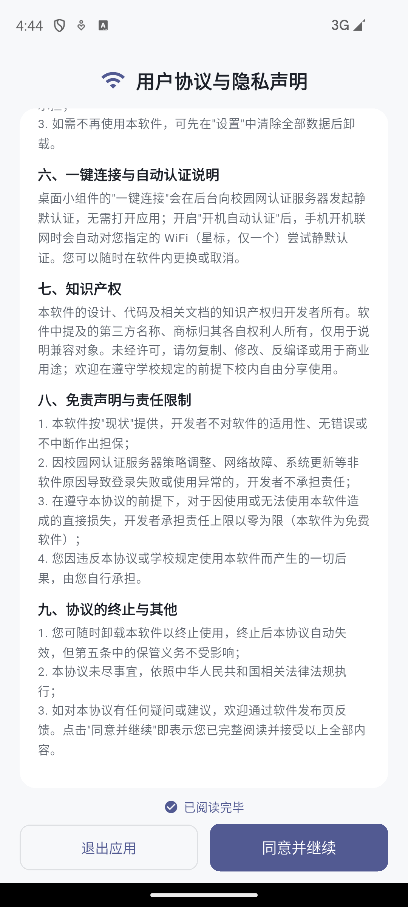
- 2
查看使用说明
进入前弹出「使用说明」，介绍数据本地保存、一键连接、开机自动认证，点「我知道了」进入首页。
首次进入时系统会请求 位置信息 与 附近的设备 权限 —— 这是 Android 扫描 WiFi 的系统要求，本软件不会获取你的地理位置轨迹，选择「使用时允许 / 允许」即可。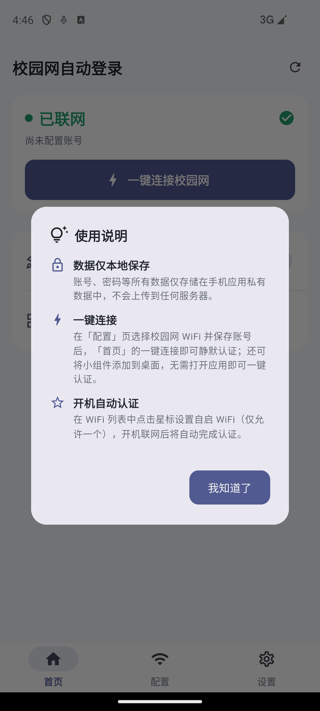
- 3
认识首页
首页顶部大字显示联网状态（已联网 / 需要登录 / 未连接），下方是「一键连接校园网」按钮，以及「开机自动认证」开关与「桌面小组件 / 快捷按钮」入口。底部在「首页 / 配置 / 设置」三个标签间切换。
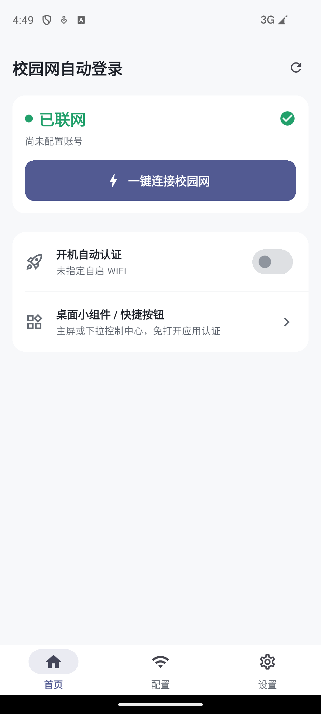
- 4
选择校园网 WiFi
切到「配置」标签，点右上角雷达图标扫描，在 WiFi 列表中点选本校 LNPC-STU（点条目选择配置，点星标设为自启，仅可设一个）。
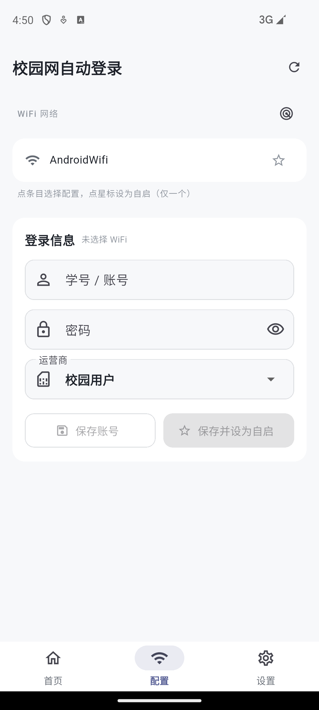
- 5
填写账号与密码
在「登录信息」填写学号 / 账号与密码，选择运营商，点「保存账号」（或「保存并设为自启」）。保存后回到首页点「一键连接校园网」即可完成认证。
演示截图中的账号 20250001 为虚构示例，请填入你自己的真实学号与密码。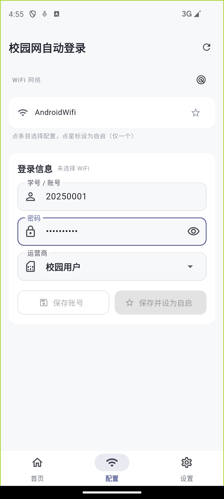
- 6
设置页一览
「设置」标签包含：认证服务器（默认 172.16.200.11:801）、联网检测守护（adb / Shizuku / root 三种方案，关闭系统探测后认证全程静默不弹浏览器）、云端同步 与 深色模式。
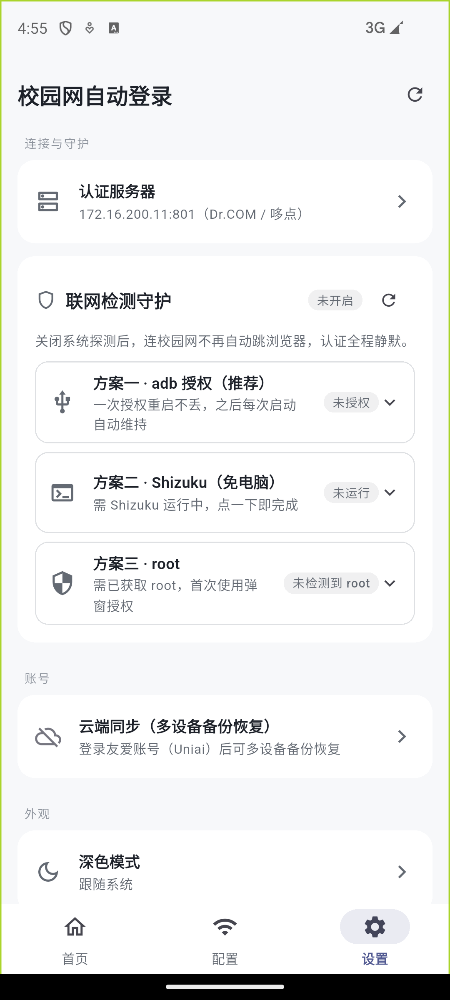
- 7
修改 / 自动探测认证服务器
点「认证服务器」弹出编辑框，可填门户地址与端口；连上校园网且未认证时点「自动探测」自动识别。本校默认值无需改动。
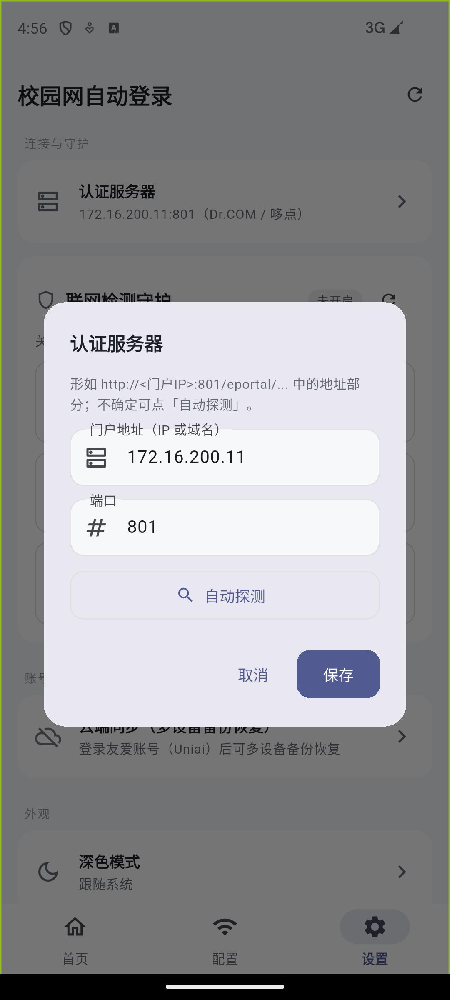
- 8
云端同步（可选）
进入「云端同步」，按提示填写服务器域名并登录友爱账号（Uniai），即可在多设备间加密备份 / 恢复 WiFi 配置。
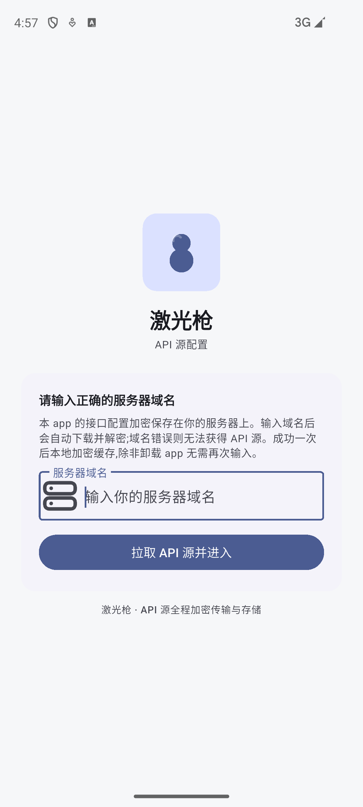
- ＋
添加桌面小组件 / 控制中心磁贴
在桌面长按「添加小组件」，搜索「校园网自动登录」放到桌面；或从下拉快捷设置添加磁贴。之后无需打开应用即可一键触发认证，实时查看连接状态。
系统级小组件 / 磁贴添加界面各厂商略有差异，此处以文字说明，不单独截图。 - ！
开着移动数据时提示「门户不可达 / 流量走移动数据」
这不是认证服务器地址填错。校园网未认证时，系统会判定该 WiFi 无外网，并把应用流量改走移动数据；而认证门户是内网地址，从移动数据访问必然超时。临时解法：关掉移动数据再点一次「一键连接」；根治：进「设置 → 联网检测守护」用 adb / Shizuku / root 任一方案关闭系统联网检测（授权一次永久有效，之后每次启动自动维持），或关掉手机的 WLAN 助理 / 移动数据加速类开关。
小米 / 红米（HyperOS）、双卡常驻数据的机型最容易碰到。应用内「设置 → 诊断日志 → 复制诊断信息」会直接给出「路由被移动数据抢走」还是「地址不通」的判读，反馈问题时附上可加快定位。
iPhone / iPad
iOS / iPadOS 版通过苹果自带的「快捷指令」实现，导入一次、首次输入账号密码（仅存本机），以后连上校园网即可自动登录，不上传任何服务器。以下截图均为 iPad 真实运行界面。
- 1
用 Safari 打开官网，进入 iPhone / iPad 入口
在 iPhone / iPad 上用 Safari 打开官网 wlan.suspect.top，在「下载应用」区找到 iPhone / iPad 卡片，点「获取 iPhone / iPad 快捷指令」。
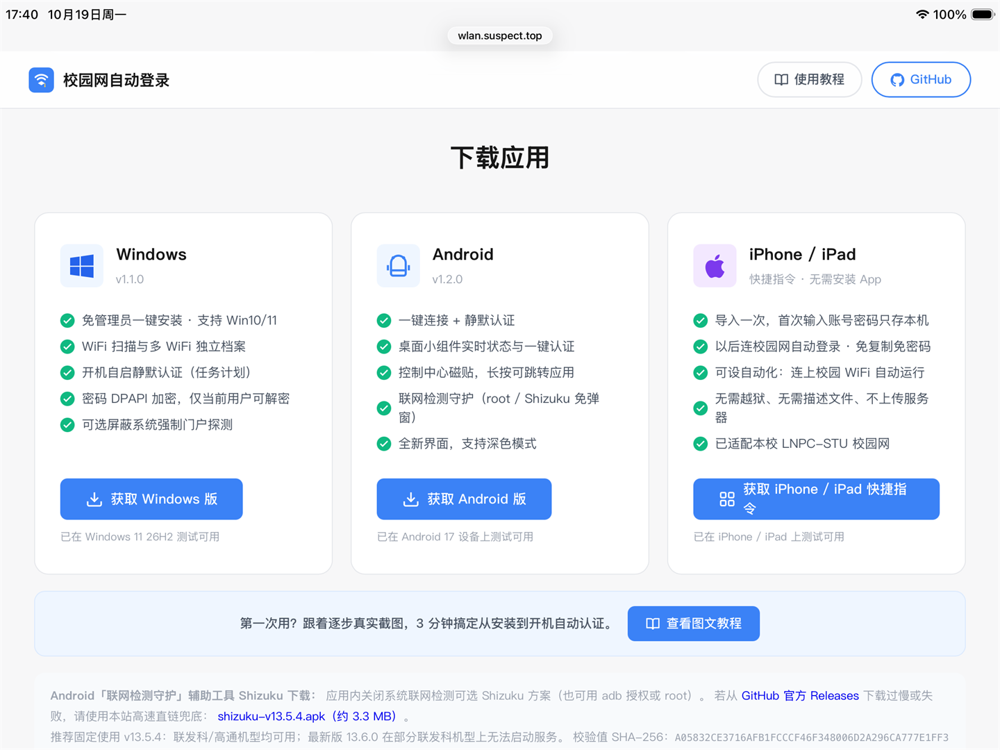
- 2
在分享页点「导入快捷指令」
进入分享页后，点蓝色「导入『校园网自动登陆』快捷指令」按钮。母版不含任何账号密码、只在你自己设备上运行，可放心安装。
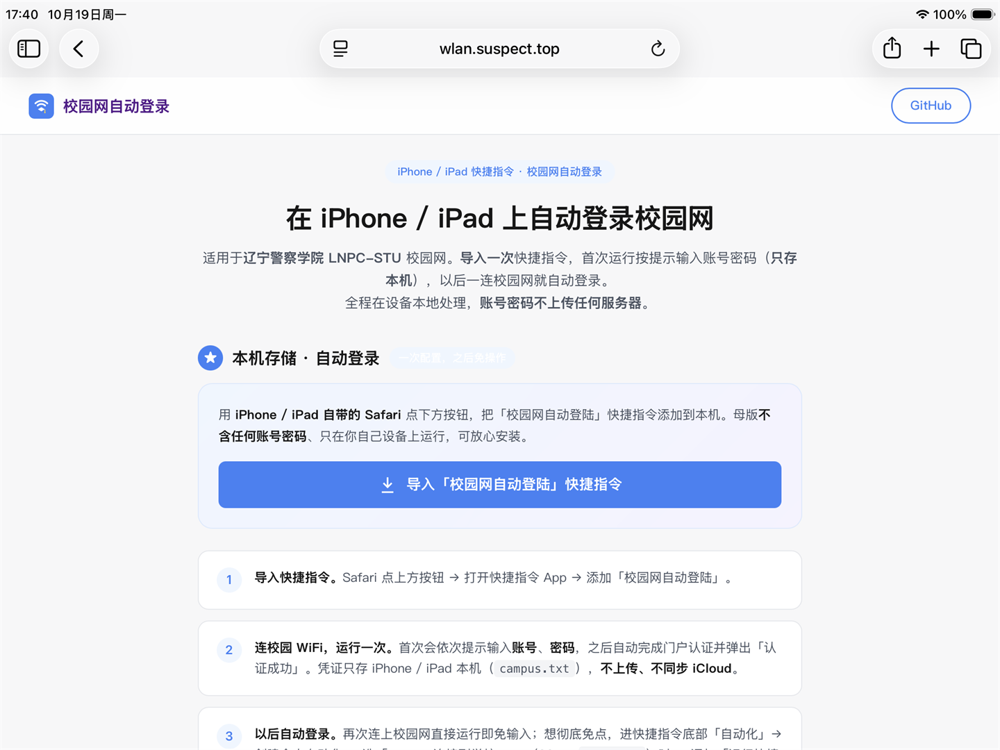
- 3
添加快捷指令
系统会自动跳到「快捷指令」App 并弹出「校园网自动登陆」捷径卡片，点「添加快捷指令」完成导入。若首次运行被拦截，前往「设置 → 快捷指令」打开「允许不受信任的快捷指令」（iOS 17+ 一般无需）。
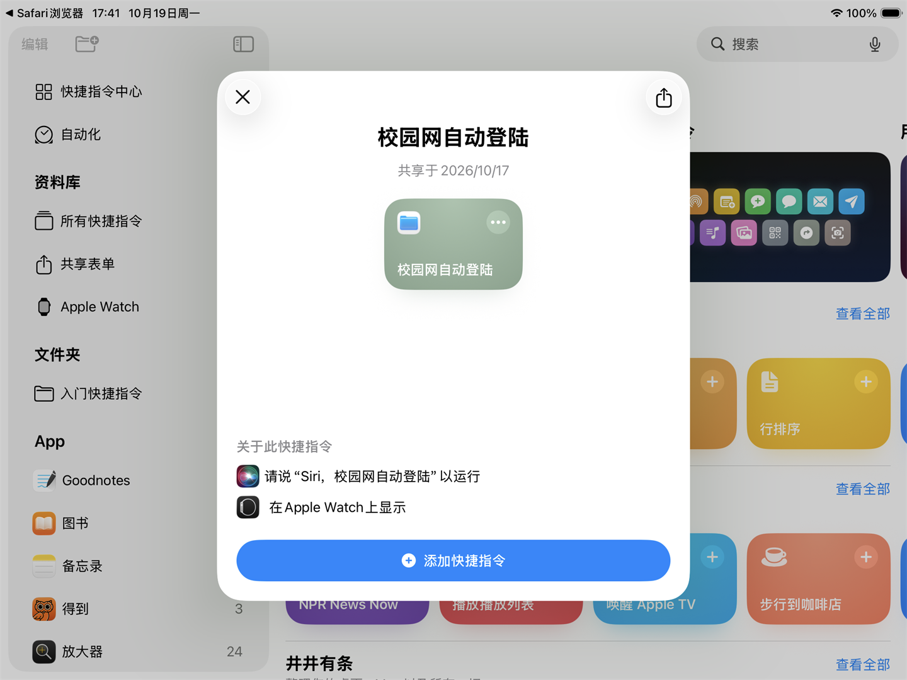
- 4
首次运行输入账号与密码
连上 LNPC-STU 后运行「校园网自动登陆」，会依次弹出输入校园网账号与密码。凭据仅保存在本机（
campus.txt），不上传、不同步 iCloud。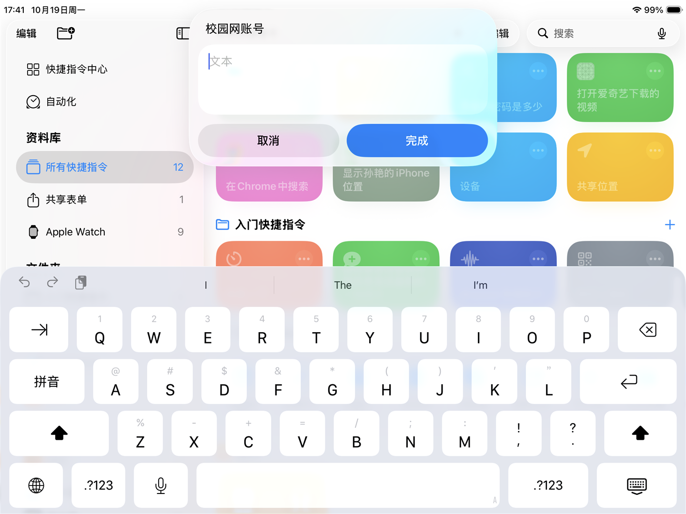
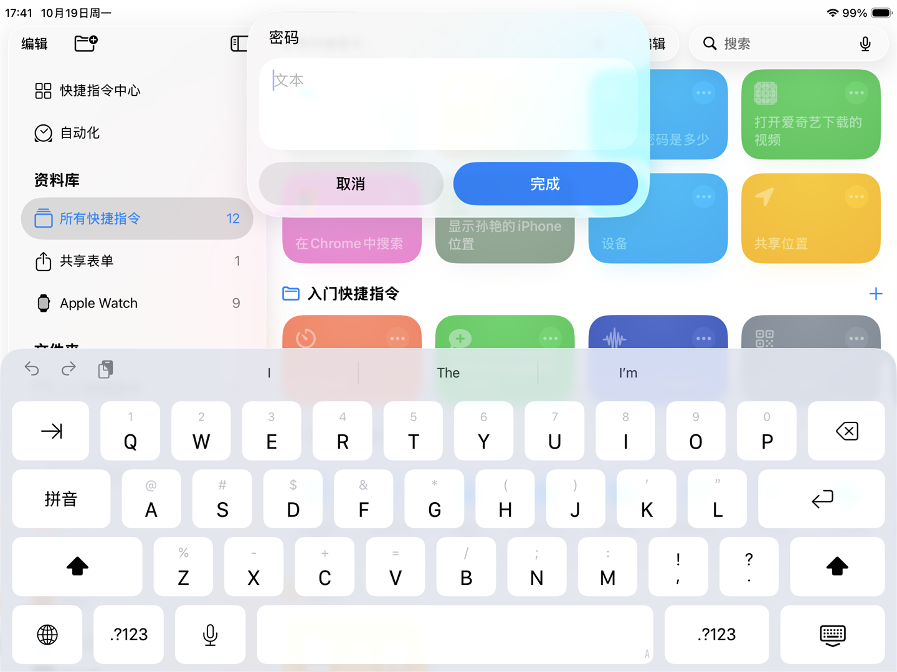
- 5
完成：已保存凭证 · 认证成功
输入后顶部通知「已保存凭证，以后将自动登录」，随后弹出「认证成功」。以后连上校园网直接运行即免输入；想彻底免点，进「快捷指令 → 自动化」新建「当连接到 LNPC-STU 时 → 运行『校园网自动登陆』」。
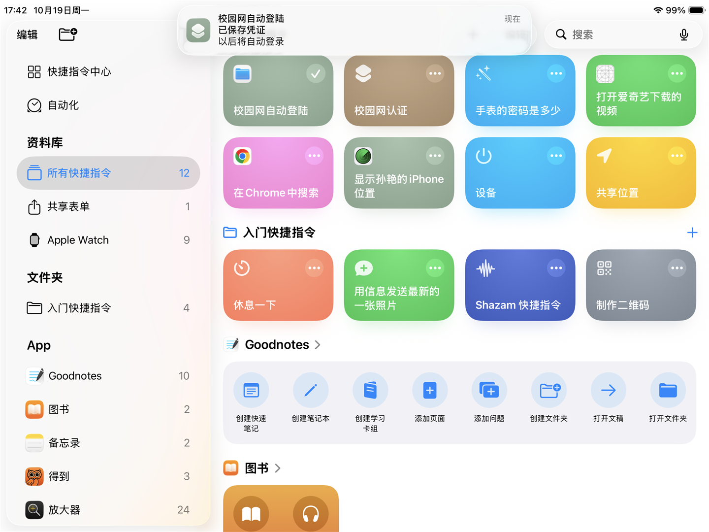
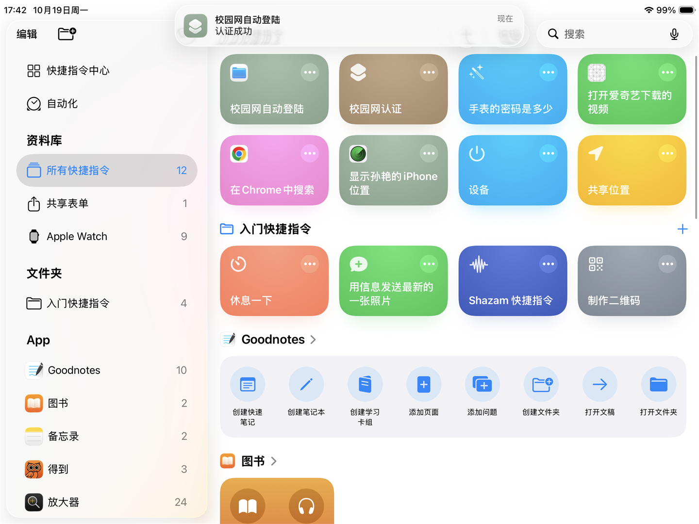
- 6
添加到主屏幕 / 控制中心（可选）
在「所有快捷指令」长按「校园网自动登陆」→「分享」→「添加到主屏幕」，可自定义名称与图标。之后桌面一键即可登录，无需进入 App。
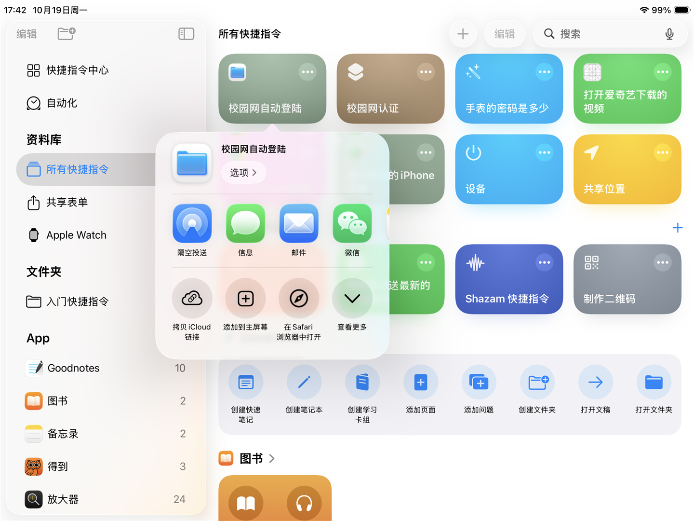
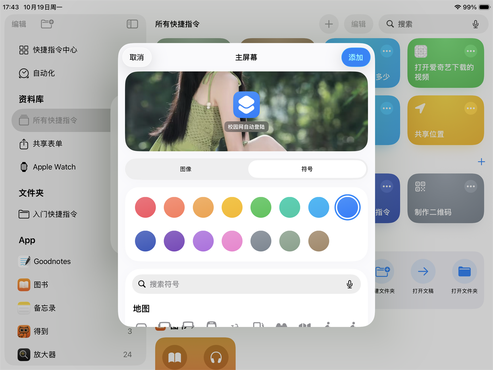